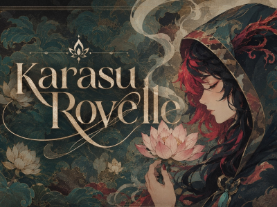
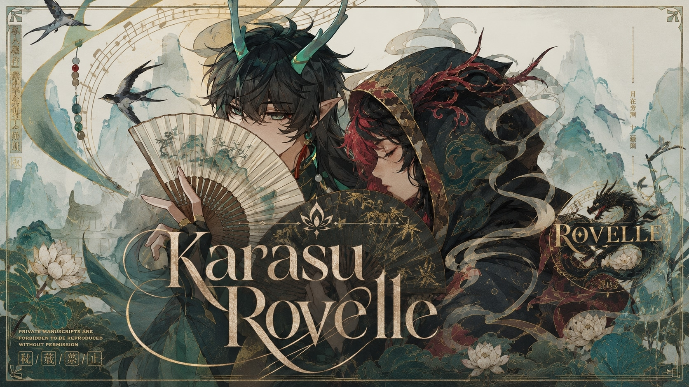
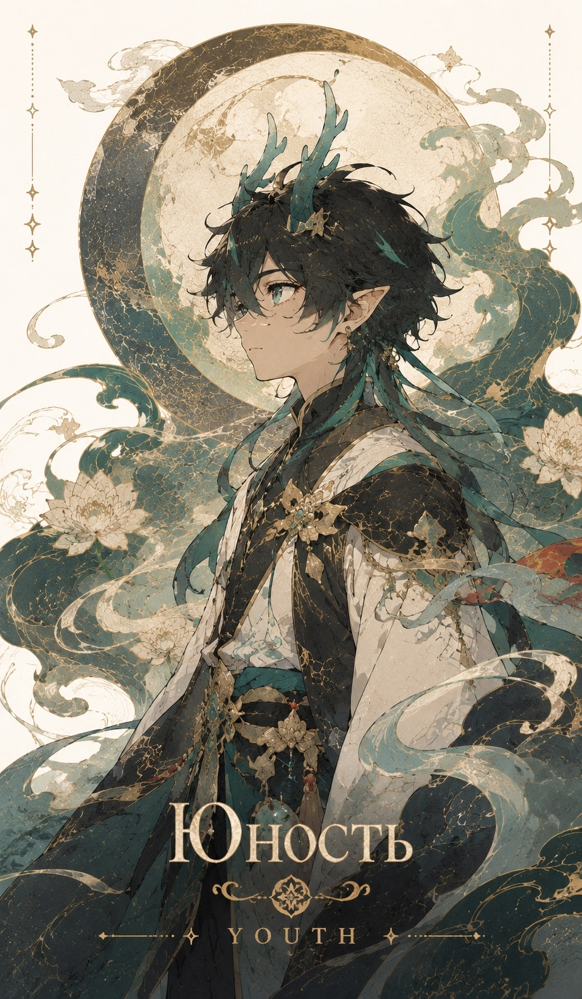
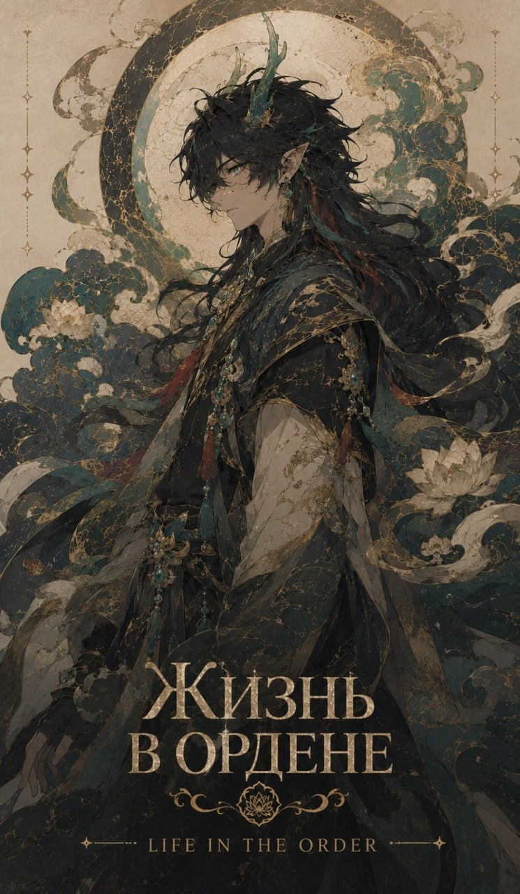
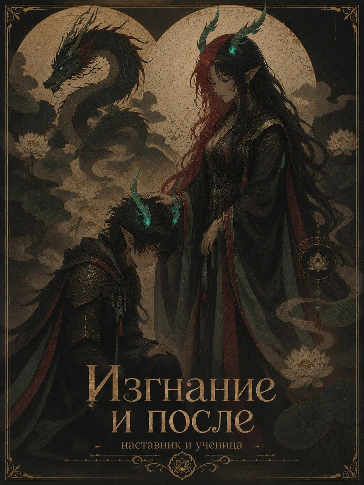

"
Я — тот, кто не оставляет следов. Тот, чья история началась не с первого шага, а с одного мгновения. Я — не лицо, не тело, не голос. Я — лишь отражение того, что однажды увидел. Мой путь начался с Пожирателя. И я пошёл за ним.
Я — Karasu Rovelle. Добро пожаловать.
Возможно, ты узнаешь что-то, чего не знал. Здесь, мой дорогой друг, ты будешь разгадывать загадки и придёшь к истине.

Юные годы Дань Хэна, его становление как личности и первые шаги на пути воина.
Период служения в Заоблачном квинтете, дружба с Цзин Юанем и другими членами ордена.
Изгнание с Лофу, путешествие на Звёздном экспрессе и принятие силы Пожирателя Луны.

Дань Хэн — холодный и сдержанный молодой человек, путешествующий на Звёздном экспрессе. Он является перерождением Дань Фэна, бывшего Верховного старейшины Лофу, носителя титула «Пожиратель Луны» (Imbibitor Lunae).
В прошлой жизни Дань Фэн совершил тяжкое преступление — «Мятеж Пожирателя Луны». Он использовал запретную Аркану Трансмутации, пытаясь воскресить погибшую подругу и дать видьядхарам возможность вырваться из цикла перерождений. Эксперимент обернулся катастрофой — было создано неконтролируемое драконье порождение, принёсшее разрушение Скальегорскому Водопаду.
В наказание Дань Фэн был подвергнут насильственному перерождению в Дань Хэна, а затем изгнан с Лофу. Позже, во время кризиса Звёздной плесени на Лофу, Дань Хэн принял остаточную силу своего прошлого воплощения и вновь обрёл облик Пожирателя Луны.
«Но знаешь ли ты, что за этой историей стоит тень, которая видит всё? Что каждый шаг Дань Хэна — это не просто шаг, а отражение того, кто когда-то давно выбрал путь между мирами?»
«Говорят, что Ровэлль — не имя. Это эхо, которое остаётся после того, как тьма рассеивается. И если ты слышишь этот шёпот — значит, ты уже часть этой истории. Или... она — часть тебя?»
«Смотри внимательнее, мой друг. В каждой легенде есть тот, кто её рассказывает. И иногда рассказчик — это самая важная тайна.»
— Karasu Rovelle
Он не был тем, кто рвётся в бой с криком и мечом наготове. Он не был и тем, кто прячется за спинами других, дрожа от страха. Дань Хэн был где-то посередине — слишком ленивым для того, чтобы доказывать свою силу, и слишком гордым, чтобы показывать слабость.
Когда другие юные воины Лофу соревновались, кто быстрее сразит врага или кто громче произнесёт имя своего клана, Дань Хэн просто стоял в стороне. Он наблюдал. Иногда он зевал. Но никогда — никогда — он не делал лишнего движения, если в этом не было необходимости.
Говорят, однажды к нему подошёл один из старейшин и спросил: «Почему ты не показываешь свою силу, мальчик? Ты мог бы быть лучшим из лучших».
Дань Хэн, не поднимая глаз, ответил: «А зачем? Если я покажу свою силу — меня заставят её использовать. А я слишком ленив для того, чтобы быть чьим-то оружием».
И он был прав. В те годы он действительно был слишком ленивым, чтобы кого-то впечатлять. Но эта лень скрывала то, что никто не мог разглядеть: огромный потенциал, который однажды пробудится и изменит судьбу всего Лофу.
«Он не был ни лучшим, ни худшим. Он просто был — и этого было достаточно, чтобы однажды стать тем, кого запомнят навсегда.»
Внутри Заоблачного квинтета динамика изменилась. Рядом с яростной Цзинлю, хитроумным стратегом Цзин Юанем, вспыльчивым Инсином и отважной лётчицей Байхэн характер Дань Фэна раскрылся иначе. Его дружба с генералом строилась на контрасте: где тот видел шахматную партию из тысяч фигур, старейшина напоминал о цене одного шага. Они редко говорили о чувствах, но их связь была крепче стали. При изгнании борисинцев именно непоколебимое присутствие Дань Фэна служило гарантом удержания флангов любой ценой.
С Инсином же сложились братские отношения. Оба были чужаками среди долгоживущих видов, оба носили шрамы прошлого. Их сблизила любовь к мастерству: один создавал оружие, другой владел им с пугающей грацией. Парные наручи они носили как символ неразрывной связи двух душ, нашедших семью посреди вечной войны.


Печать клана разбилась о камни. Изгнание из Облачных Рыцарей Лофу было тихим: Дань Хэн просто шагнул в туман Сяньчжоу, став никем. Он брел сквозь чужие миры, пока гравитация ржавого ковчега не швырнула его на палубу. Там, среди космического мусора, сидела Ровэлль. Серебряные волосы, золотые провалы глаз вместо белков. Она даже не повернула головы.
— Тебя вышвырнули за то, что ты отказался быть мечом, — её голос звучал как скрежет металла. — Они хотели оружие. Я предлагаю тебе стать великим.
Она протянула руку. В этом союзе не было места планам. Ровэлль никогда их не слушала, действуя на чистых инстинктах хищника, бросая флот в атаку просто потому, что цвет на радаре раздражал ей сетчатку. Для неё война была хаотичным танцем.
Дань Хэн стал её якорем. Пока наставница танцевала на грани безумия, он стоял по правую руку, читая её молчание и превращая нелогичные броски в идеальные удары. Его лень сменилась мёртвой сосредоточенностью. Больше не чьё-то потенциальное оружие, он стал тенью той, кто предлагала миру сгореть дотла. Путь назад в Лофу был навсегда стерт из его памяти.
Заходи в маленький дворец, где тайны становятся явью, где твои идеи реализуются с помощью таких же искателей правды, как ты.
🔗 Присоединиться в Telegram